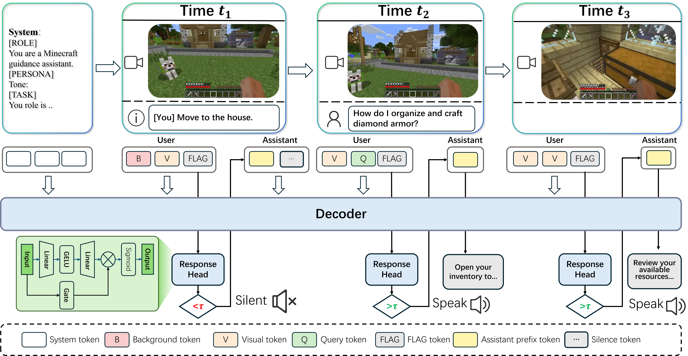

Proact-VL turns multimodal language models into proactive, real-time AI companions that can continuously watch, understand, decide when to speak, and generate timely multimodal commentary in dynamic environments.
We introduce Proact-VL, a general framework that shapes multimodal language models into proactive, real-time interactive agents capable of human-like environment perception and interaction. Proact-VL is designed to address three core requirements for AI companions in streaming settings: real-time processing of infinite video streams, autonomous response triggering, and context-aware, controllable commentary generation. The framework supports multiple interaction scenarios, including single-speaker commentary, multi-speaker commentary, and guidance-oriented assistance, and is built on flexible backbone models such as Qwen2-VL, Qwen2.5-VL, and Qwen3-VL. To evaluate these capabilities, the paper presents a comprehensive live gaming benchmark with LLM-based judging for both responsiveness and commentary quality.
Most existing VideoLLMs are designed around request-response interaction. They can answer questions after being prompted, but they do not naturally decide when to speak, when to stay silent, or when an event deserves timely intervention in an ongoing stream.
Real AI companions must operate over infinite video streams with low latency. This requires stable streaming perception, response timing, and commentary quality control, which are not the primary target of traditional offline or clip-based video understanding systems.

Figure 2: Overview of the Proact-VL framework. The system combines streaming multimodal perception with proactive response decision-making and commentary generation for real-time AI companions.
Proact-VL addresses these challenges by jointly modeling continuous perception, response triggering, and controllable interactive generation under realistic latency constraints.
Proact-VL is built for continuous video input rather than isolated clips, allowing the system to maintain low-latency understanding over long or unbounded streams.
Placeholder: Optional method-specific figure.
Beyond reactive answering, Proact-VL supports single-speaker commentary, multi-speaker co-commentary, and guidance interaction, enabling richer and more human-like agent behavior.
Placeholder: Optional interaction figure.
Proact-VL supports three distinct real-time companion modes: single-speaker live commentary, multi-speaker co-commentary, and guidance-oriented assistance. The demos below map one video to each task type.
A single proactive commentator tracks the live scene, decides when to speak, and delivers concise event-focused narration with low latency.
Multiple assistants coordinate as co-commentators, taking turns to produce richer, more dynamic narration over the same live stream.
The agent observes ongoing actions, identifies teachable moments, and provides timely guidance that helps users complete tasks more effectively.
@misc{yan2026proactvl,
title={Proact-VL: A Proactive VideoLLM for Real-Time AI Companions},
author={Weicai Yan and Yuhong Dai and Qi Ran and Haodong Li and Wang Lin and Hao Liao and Xing Xie and Tao Jin and Jianxun Lian},
year={2026},
eprint={2603.03447},
archivePrefix={arXiv},
primaryClass={cs.CV},
url={https://arxiv.org/abs/2603.03447},
}